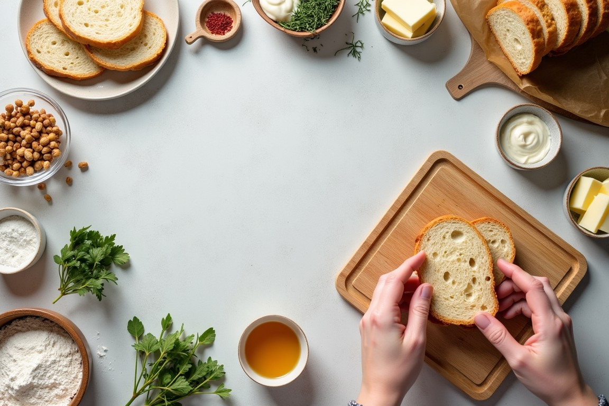
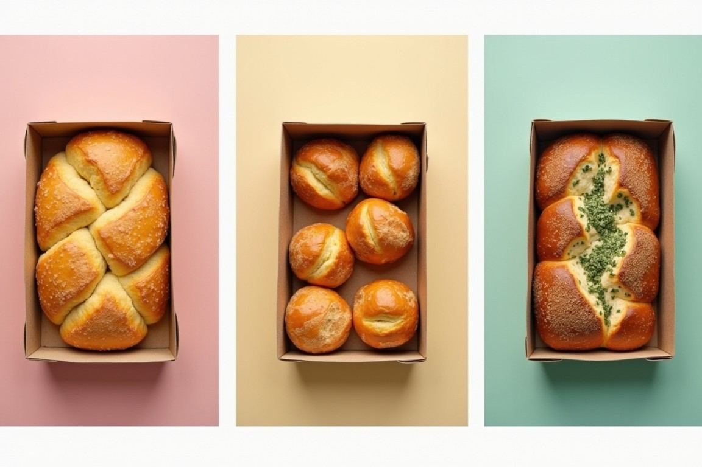
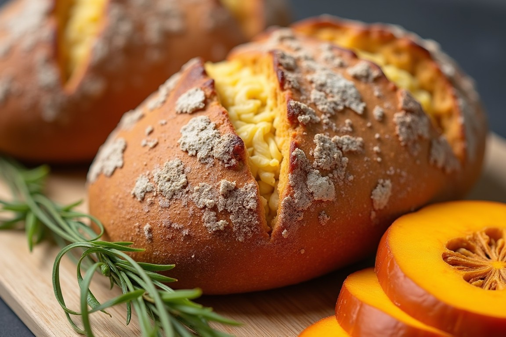

Custom Creations: How to Build Your Dream Bread Box at SweetCrust

What if you could have your perfect selection of bread, tailored just for you? At SweetCrust Bakery, we believe bread is personal. Whether it’s the tang of sourdough, the buttery softness of brioche, or the wholesome crunch of multigrain, every loaf speaks to a unique taste.
That’s why we’ve made it easy (and fun!) for you to build your very own dream bread box. Imagine the joy of opening a box filled with your favorites, crafted with love and delivered right to your doorstep. It’s like getting a little slice of happiness—literally.
Let’s dive into the art of customization and how you can create the ultimate bread experience—because life’s too short for boring bread.
The Art of Customization at SweetCrust
Why Personalization Matters
Have you ever stood in a bakery, overwhelmed by the choices, and wished you could take a bit of everything? Personalization at SweetCrust takes the guesswork out of the equation and puts you in the driver’s seat.
Whether you’re a fan of the classics or love exploring new flavors, your bread box can reflect exactly what you crave. It’s like designing your dream plate but better—because bread makes everything better.
SweetCrust’s Customization Options
Building your dream bread box is as easy as ABC (or should we say SBB—SweetCrust Bread Box?). Here’s how it works:
- Choose Your Loaves: Pick from our signature selection—sourdough, brioche, multigrain, and our seasonal specialty loaf. Feeling adventurous? Mix and match to keep things exciting.
- Add Your Extras: Elevate your box with optional add-ons like homemade spreads, flavored butters, or even sweet treats to complement your bread.
- Select Your Packaging: Go green with eco-friendly wrapping and personalize it with a handwritten note—because a little charm goes a long way.
With these simple steps, you’re not just building a bread box; you’re creating a moment of indulgence, crafted just for you.
Ready to start building your perfect box? Order your custom bread box now!
Inspiration for Your Bread Box
Need a little help getting started? Here are some themed bread boxes to spark your imagination:
- Breakfast Bliss: Start your mornings right with brioche, multigrain, and a jar of honey butter.
- Party Favorites: Impress your guests with sourdough, seasonal loaf, and a side of herbed butter.
- Global Flavors: Take a mini culinary trip with sourdough, brioche, and a seasonal loaf infused with local herbs like pandan or spices inspired by curry.
Each theme is designed to bring a unique experience to your table. And the best part? You’re the mastermind behind it all.
Perfect Pairings for Your Box
Every great bread deserves an equally great companion. Here are some pairing ideas to take your custom bread box to the next level:
- For Sourdough:Pair with creamy butter, sharp cheddar, or tangy homemade chutney. Add a cup of teh tarik for that comforting Malaysian touch.
- For Brioche:Think sweet—like kaya (a match made in bread heaven) or a drizzle of honey.
- For Multigrain:Best enjoyed with hearty lentil soup or avocado spread. Feeling adventurous? Sprinkle chili flakes on top for a spicy kick.
Want to go the extra mile? Include spreads like fig jam, garlic butter, or even tropical pineapple chutney in your box. The possibilities are endless—and the fun is in the experimenting.
SweetCrust’s Seasonal Touch
One of the highlights of building your bread box is discovering our seasonal specialty loaf. Each season, our bakers create a limited-edition flavor inspired by local ingredients.
From pandan-infused brioche to spiced pumpkin sourdough, these loaves are a celebration of Malaysia’s rich flavors and seasons. Including one in your box is like adding a little surprise gift for your taste buds every time you open it.
Ready to Create Your Perfect Box?
At SweetCrust, building your dream bread box isn’t just about bread; it’s about creating moments of joy and connection. Whether it’s a quiet breakfast, a festive gathering, or a thoughtful gift for someone you love, the possibilities are endless.
With our easy customization options and premium ingredients, your perfect bread box is just a few clicks away. So, what will you create? A box of breakfast delights? A collection of dinner companions? Or maybe a mix of both?
Don’t wait to experience the joy of customization. Order your personalized Heritage Bread Box today!
At SweetCrust, every loaf tells a story—and now, your bread box can tell yours. Let’s make it delicious, together.
Back